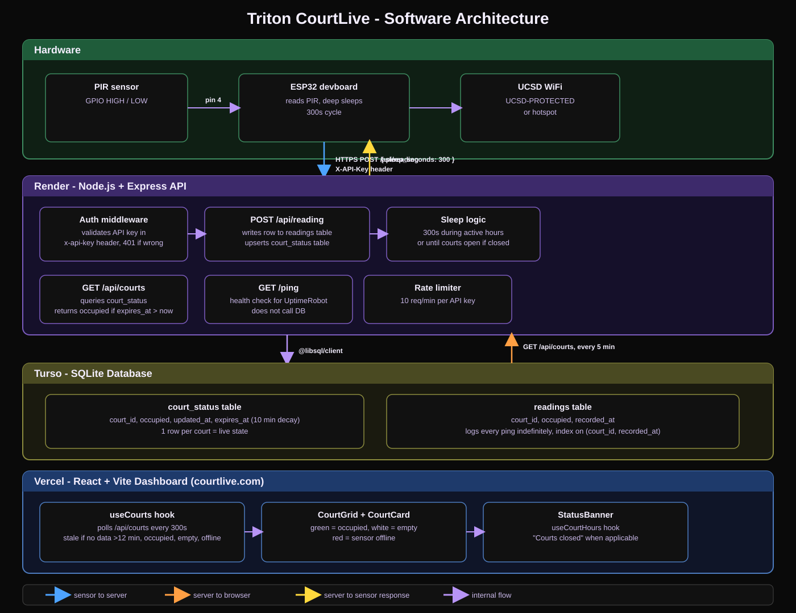

Software Architecture
Triton CourtLive runs on a four-layer stack: ESP32 hardware posts motion readings to a Render API, which stores live court state in Turso and serves it to the React dashboard on Vercel. The chart was generated by Cursor AI.

Hardware
A PIR sensor on GPIO pin 4 signals motion to an ESP32, which deep-sleeps on a 300-second cycle and posts readings over UCSD WiFi.
Backend
Render hosts a Node.js + Express API that authenticates sensors, writes to Turso, and tells each device how long to sleep before the next ping.
Database
Turso stores a live court_status row per court (with 10-minute decay) and an append-only readings log for analytics.
Frontend
Vercel serves the React + Vite dashboard at courtlive.com, polling court status and showing occupied, empty, or offline states per court.